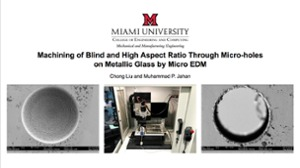
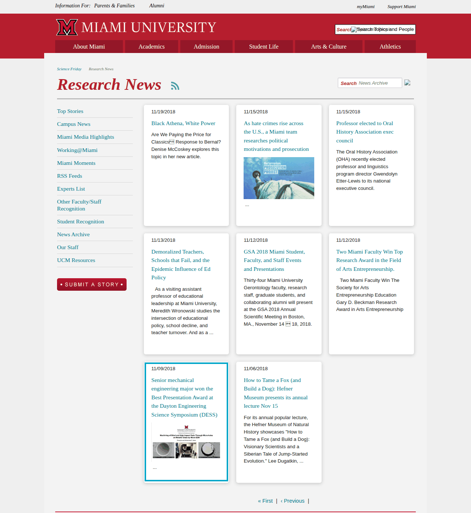

Best Presentation Award — DESS
Research Presented
The award-winning presentation was titled "Machining of Blind and High Aspect Ratio Through Micro-holes on Metallic Glass by Micro EDM", by Chong Liu and Muhammad P. Jahan, Department of Mechanical and Manufacturing Engineering, Miami University.

The presentation title slide, as published with the original Miami University news story.
News Coverage
Miami University's Science Friday Research News covered the award on 11/09/2018 under the headline "Senior mechanical engineering major won the Best Presentation Award at the Dayton Engineering Science Symposium (DESS)". The entry reads:

The entry as it still appears in the Science Friday Research News archive (highlighted). Click the image to zoom.
Source Links
The original article has been removed from Miami University's website — the link below now returns a 404. It is kept here for reference, together with working alternatives.
- Original article (no longer available): miamioh.edu/cec/news/2018/11/dess-conference.html
- Archived copy (Internet Archive): web.archive.org snapshot, 4 December 2024
- Still live — the news entry in Miami's Science Friday Research News archive: miamioh.edu/sciencefriday/research-news/?page=36